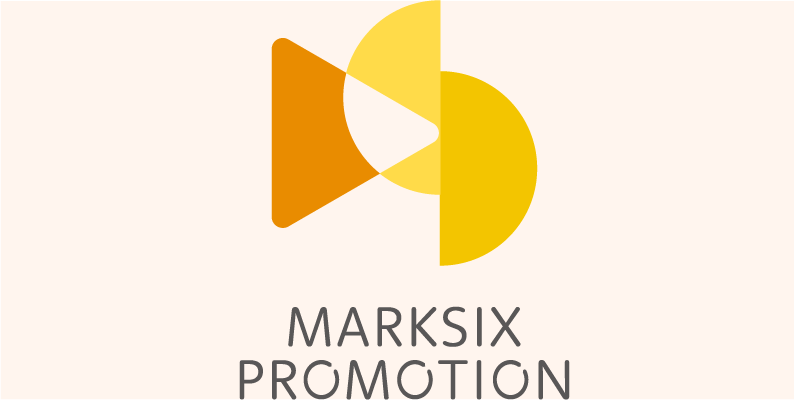

ロゴ
マークシックス株式会社様

- 概要
- マークシックス株式会社様のロゴデザイン
- デザイン
-
この作品は実際に企業ロゴとして採用されました。
クリエイティブな会社のロゴの依頼だったので新しい世界を再生すると いうコンセプトで作成しました。
マークシックスの６をしずくに見立てた案や、新しい世界をイメージし て虹色の配色にした案などがありましたが、できるだけシンプルなデザ インがいいとの要望がありましたので、図形を使用した案が採用されました。
左側の三角と中央の半円はマークシックスのMを表していて、中央の半 円と右側の半円はSと６を表しています。
オレンジ系の色は、エンタメ、活動的な印象を与え、イエロー系は注目させる、クリエイティブ、個性的な印象を与えることができます。
- 作業工程
- 要件定義 デザイン設計 デザイン
- 制作期間
- 2週間
- 使用ツール
- Illustrator